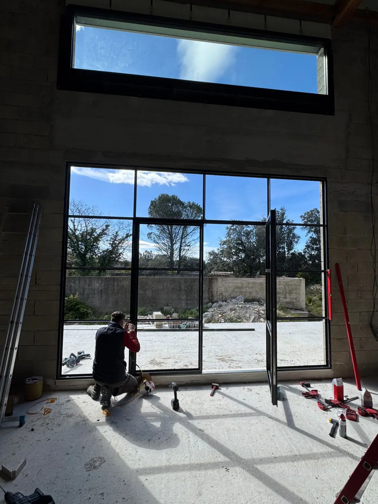
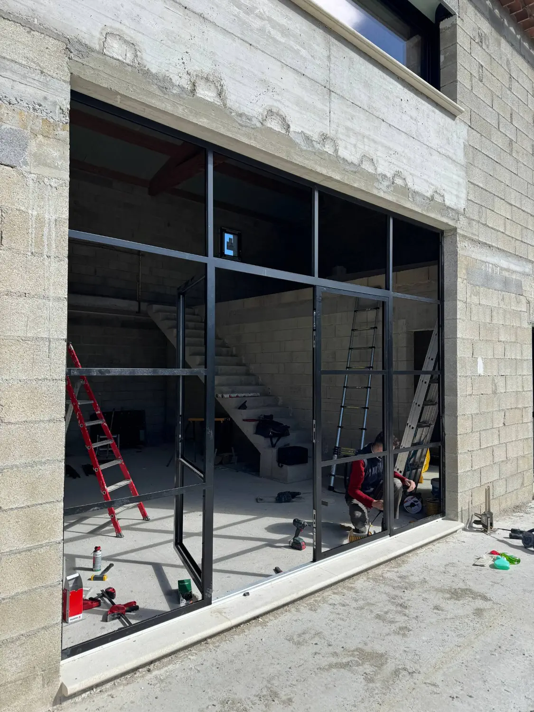

Dans le Vaucluse, sur une maison en construction, une large ouverture de 4 × 3 m attendait sa menuiserie : une baie appelée à devenir l'une des pièces maîtresses de la façade, ouverte sur le jardin et ses pins. Le défi : réunir la finesse d'une verrière d'atelier, l'isolation d'une menuiserie contemporaine et une porte donnant directement sur le jardin. FMG Metal Studio a conçu un ensemble unique, entièrement sur mesure, dans sa collection Pleine Lumière®.
Une menuiserie monumentale d'un seul ensemble
À cette échelle, une menuiserie n'est plus une simple fenêtre : c'est un élément d'architecture, qui dessine la façade de l'extérieur et cadre le paysage de l'intérieur. L'ensemble a été composé comme tel, sur une trame régulière de quatre travées.
- Une porte deux vantaux au centre, pour ouvrir largement la pièce sur l'extérieur.
- Deux châssis fixes de part et d'autre, toute hauteur, qui prolongent la porte sans rupture.
- Une imposte vitrée sur toute la largeur, au-dessus de la porte, pour faire entrer la lumière jusqu'au fond de la pièce.
- Des traverses alignées d'une travée à l'autre, qui donnent à l'ensemble le rythme d'une verrière d'atelier.


Des profilés fins JANSEN à rupture de pont thermique
L'ouvrage est réalisé en profilés acier JANSEN, fabricant suisse de référence en menuiserie acier. Leur intérêt tient en deux mots : finesse et performance. Les montants restent très fins, bien plus que ceux d'une menuiserie aluminium ou PVC de même taille, ce qui laisse toute la place au verre et à la vue. Et grâce à la rupture de pont thermique, une barrière isolante intégrée au cœur du profilé, l'acier extérieur et l'acier intérieur ne sont pas en contact direct : la menuiserie limite les déperditions de chaleur et le risque de condensation, comme une menuiserie contemporaine.
C'est ce qui rend possible une baie de 12 m² en acier dans une maison d'habitation : l'élégance et la finesse d'une verrière d'atelier, sans renoncer au confort thermique.
Une fabrication et une pose de précision
Plus une menuiserie est grande, moins elle pardonne. Sur 4 mètres de large et 3 mètres de haut, quelques millimètres d'écart d'équerrage ou d'aplomb suffisent à faire frotter un vantail, à compromettre l'étanchéité ou à briser l'alignement des traverses. Tout se joue donc en amont et au millimètre :
- Relevé et dessin : la menuiserie est dessinée aux cotes exactes de la baie, en intégrant les tolérances du gros œuvre et l'appui en pierre.
- Fabrication en atelier : les profilés JANSEN sont découpés et assemblés dans notre atelier, où l'équerrage de chaque cadre est contrôlé avant le départ sur le chantier.
- Manutention et pose : un ensemble de cette taille, en acier et en verre, représente un poids important. Il est mis en place, calé, réglé d'aplomb et de niveau sur le chantier, puis les vantaux sont ajustés pour une fermeture nette et étanche.
Les photos de chantier montrent cette étape : l'ensemble en place dans la baie, pendant le réglage des vantaux de la porte.
Une finition thermolaquée RAL 7016
Toute la menuiserie a été thermolaquée en RAL 7016, un gris anthracite profond qui affirme le dessin des profilés sur la pierre et le béton de la façade, tout en restant sobre. Le thermolaquage offre une finition homogène et résistante, adaptée à un ouvrage exposé au plein soleil et au mistral du Vaucluse.
- Ouvrage
- Menuiserie acier extérieure sur mesure
- Dimensions
- 4 × 3 m (12 m²)
- Composition
- Porte deux vantaux, 2 châssis fixes, imposte vitrée
- Profilés
- Acier JANSEN à rupture de pont thermique
- Collection
- Pleine Lumière®
- Finition
- Thermolaquage RAL 7016
- Projet
- Maison particulière en construction
- Lieu
- Vaucluse (84)
Votre menuiserie acier sur mesure dans le Vaucluse et le Sud
Baie monumentale comme ici, verrière intérieure avec porte vitrée ou menuiseries cintrées sous des arcs en pierre : chaque menuiserie acier que nous réalisons est dessinée pour son lieu, puis fabriquée dans notre atelier nîmois. Nous intervenons dans le Vaucluse, autour d'Avignon, dans le Gard, l'Hérault, les Bouches-du-Rhône et sur toute la Côte d'Azur.
Vous avez un projet de menuiserie acier ? Découvrez nos réalisations ou parlons de votre projet.